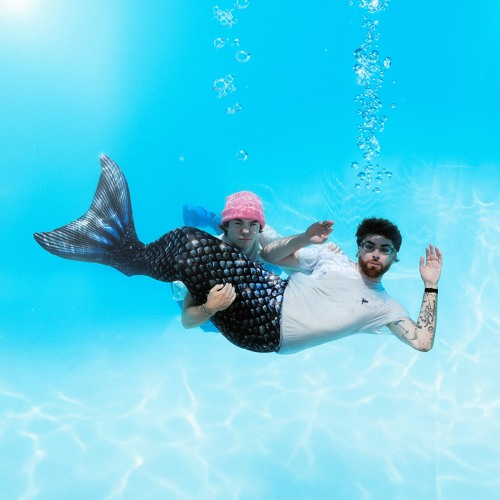
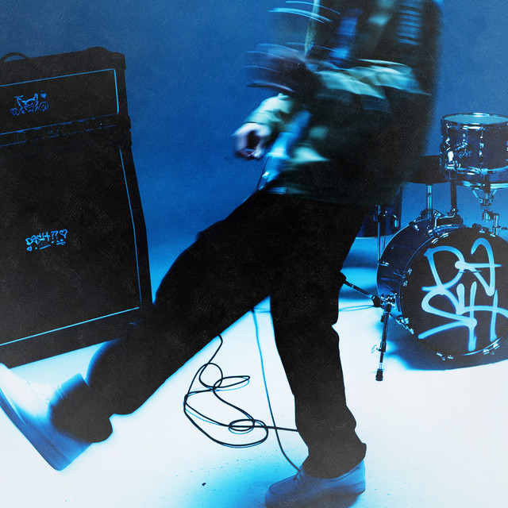

Urban/Rhythmic Music
Artists include Zachary Knowles, Joseph Tilley, Connor Price and more. This isn't a playlist that rap/hip-hop aficionados are gonna adore. Clean music and rhythmic music don't go together super often, so this playlist is pretty cheesy, with the likes of Nic D and Connor Price. That doesn't mean there aren't some bangers. R&B lovers will appreciate 'here' by Emily Vaughn. Carpool by Zachary Knowles, Backseat by Jutes, and pretty much any song by Joseph Tilley are hip-hop enough for most.
Some of the worthy mentions
Well, these artists are cleanish alright, but if you want a tolerable blend, I'd skip to the playlist.
 My rhythmic playlist. Somehow, I found clean hip-hopish songs. Enjoy!